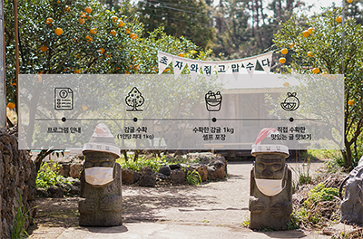

[일시] 매일 9:00~18:00 중
[장소] 최남단체험감귤농장 (서귀포시 남위남성로 164)
[대상] 남녀노소 누구나
[인원] 1일 200명
[참가비] 1인 10,500원 (정가 15,000, 30% 할인가) *기획전 할인 기간은 10월까지이며, 진행상황에 따라 조기 종료될 수 있습니다. 예약하러 가기
상세정보
365일 열려있는 최남단체험감귤농장
최남단체험감귤농장은 연중 무휴로 한라봉, 청견, 세미놀 또는 카라향 1kg 따기 체럼을 제공하고 있습니다.
제주도의 귤을 직접 수확하는 체험을 통해 제주의 자연과 교감을 나누며 힐링을 얻어가시길 바랍니다.
감귤따기 실제 체험
청정 제주의 제철 감귤따기 체험을 즐겨보세요!
감귤품종 다양화를 이룬 총면족 2만평 부지의 감귤농장에서 1년 365일 언제든 테철 감귤 과일을 딸 수 있습니다.
우천시에도 비가림하우스에서 수확이 가능하며, 최남단의 감귤은 당도가 높아 그 맛도 으뜸입니다. (4~6월 : 한라봉, 청견, 세미놀, 카라향 수확 가능)
봄(한라봉, 진지향, 청견, 세미놀, 카라향)
여름(카라향, 블루베리, 난방하우스감귤)
가을(극조생노지감귤)
겨울(노지감귤)

[감귤따기 체험 순서]
최남단체험감귤농장 소갸와 체험 시 주의사항에 대한 안내 (5분)
4~6월 중 열리는 귤 종류(한라봉, 청견, 카라향 등)를 따서 바구니에 담기 *한 사람 당 1kg까지 수확 가능